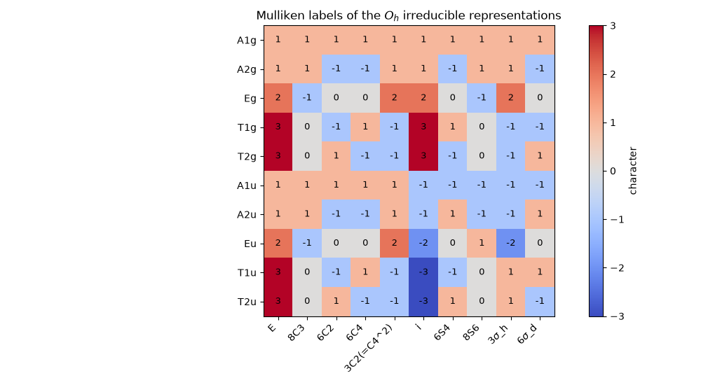

Note
Go to the end to download the full example code.
Mulliken symbols: reading the labels of irreducible representations#
Robert Mulliken’s 1955 report fixed how chemists label the irreducible representations in a character table. The rules read the label straight off the characters:
the letter gives the dimension, which is the character under the identity \(E\): A or B for 1, E for 2, T for 3;
a one-dimensional irrep is A if it is symmetric under the principal rotation \(C_n\) (character +1) and B if antisymmetric (-1); the cubic groups measure this against their \(C_3\) axes, so they have no B irreps;
in a group with an inversion centre, subscript g (gerade) means a character of +dimension under \(i\), u (ungerade) a negative one;
primes (’ and ‘’) mark symmetric and antisymmetric behaviour under a horizontal mirror plane \(\sigma_h\), and numeric subscripts tell apart irreps that would otherwise share a symbol.
This example applies those rules to every tabulated finite point group in
CHARACTER_TABLES and
checks that each stored label agrees with its characters. It then draws
the \(O_h\) table colored by character.
import matplotlib.pyplot as plt
import numpy as np
from chemistrykit.structure.systems.point_group import CHARACTER_TABLES, get_character_table
DIMENSION_LETTERS = {1: "AB", 2: "E", 3: "T"}
def principal_rotation_classes(table):
"""Classes holding the highest-order proper rotations C_n.
In groups such as D2h, with three equivalent C2 axes and no unique
principal axis, all three are returned and A means symmetric under every one.
The cubic groups (Td, Oh) take their four C3 axes as the reference, which
is why they have no B irreps at all.
"""
if "8C3" in table.operations:
return ["8C3"]
orders = {}
for op in table.operations:
core = op.lstrip("0123456789")
if core.startswith("C") and core[1:2].isdigit():
orders[op] = int(core[1])
if not orders:
return []
n_max = max(orders.values())
return [op for op, n in orders.items() if n == n_max]
def mulliken_check(table, irrep):
"""Return the Mulliken letter(s) and g/u subscript the characters imply."""
dim = int(table.character(irrep, "E"))
letter = DIMENSION_LETTERS[dim]
if dim == 1:
symmetric = all(table.character(irrep, op) > 0 for op in principal_rotation_classes(table))
letter = "A" if symmetric else "B"
parity = ""
if "i" in table.operations:
parity = "g" if table.character(irrep, "i") > 0 else "u"
return letter, parity
n_checked = 0
for name, table in CHARACTER_TABLES.items():
if "inf" in name:
continue # linear groups use Greek labels (Sigma, Pi, Delta)
for irrep in table.irreps:
letter, parity = mulliken_check(table, irrep)
assert irrep[0] in letter, (name, irrep, letter)
if parity:
assert parity in irrep, (name, irrep, parity)
n_checked += 1
print(f"{name:4s}: {', '.join(table.irreps)}")
print(f"\nAll {n_checked} Mulliken labels agree with their characters.")
C1 : A
Cs : A', A''
Ci : Ag, Au
C2 : A, B
C2v : A1, A2, B1, B2
C2h : Ag, Bg, Au, Bu
C3v : A1, A2, E
D2h : Ag, B1g, B2g, B3g, Au, B1u, B2u, B3u
D3h : A1', A2', E', A1'', A2'', E''
D4h : A1g, A2g, B1g, B2g, Eg, A1u, A2u, B1u, B2u, Eu
Td : A1, A2, E, T1, T2
Oh : A1g, A2g, Eg, T1g, T2g, A1u, A2u, Eu, T1u, T2u
All 57 Mulliken labels agree with their characters.
A worked example, the \(C_{3v}\) group of ammonia: \(A_1\) and \(A_2\) are both one-dimensional and symmetric under \(C_3\), and differ (subscript 1 vs 2) under the vertical mirror planes; E is the two-dimensional irrep.
c3v = get_character_table("C3v")
for irrep in c3v.irreps:
print(f"C3v {irrep:3s}: " + " ".join(f"{op}={c3v.character(irrep, op):g}" for op in c3v.operations))
C3v A1 : E=1 2C3=1 3sigma_v=1
C3v A2 : E=1 2C3=1 3sigma_v=-1
C3v E : E=2 2C3=-1 3sigma_v=0
The \(O_h\) character table, colored by character, with the dimension (character under \(E\)) and the g/u parity (character under \(i\)) visible in the first and sixth columns:
oh = get_character_table("Oh")
chars = np.array(oh.characters)
fig, ax = plt.subplots(figsize=(10, 5.5))
im = ax.imshow(chars, cmap="coolwarm", vmin=-3, vmax=3)
ax.set_xticks(range(len(oh.operations)), [op.replace("sigma", r"$\sigma$") for op in oh.operations], rotation=45, ha="right")
ax.set_yticks(range(len(oh.irreps)), oh.irreps)
for (r, c), v in np.ndenumerate(chars):
ax.text(c, r, f"{v:.0f}", ha="center", va="center", fontsize=9)
ax.set_title(r"Mulliken labels of the $O_h$ irreducible representations")
fig.colorbar(im, ax=ax, label="character")
fig.tight_layout()
plt.show()

Total running time of the script: (0 minutes 0.081 seconds)